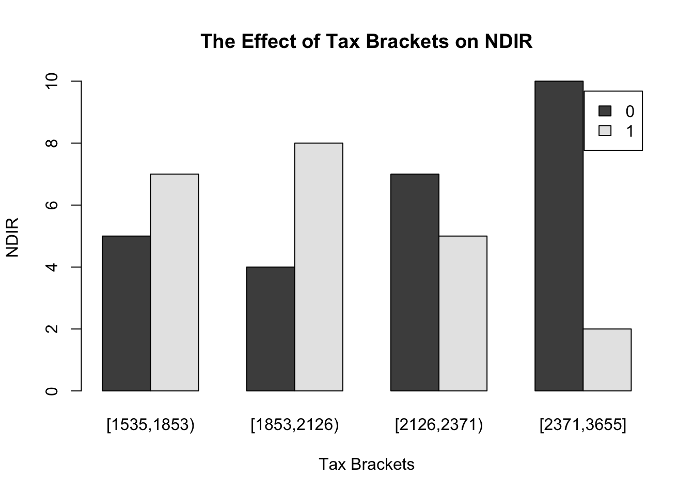
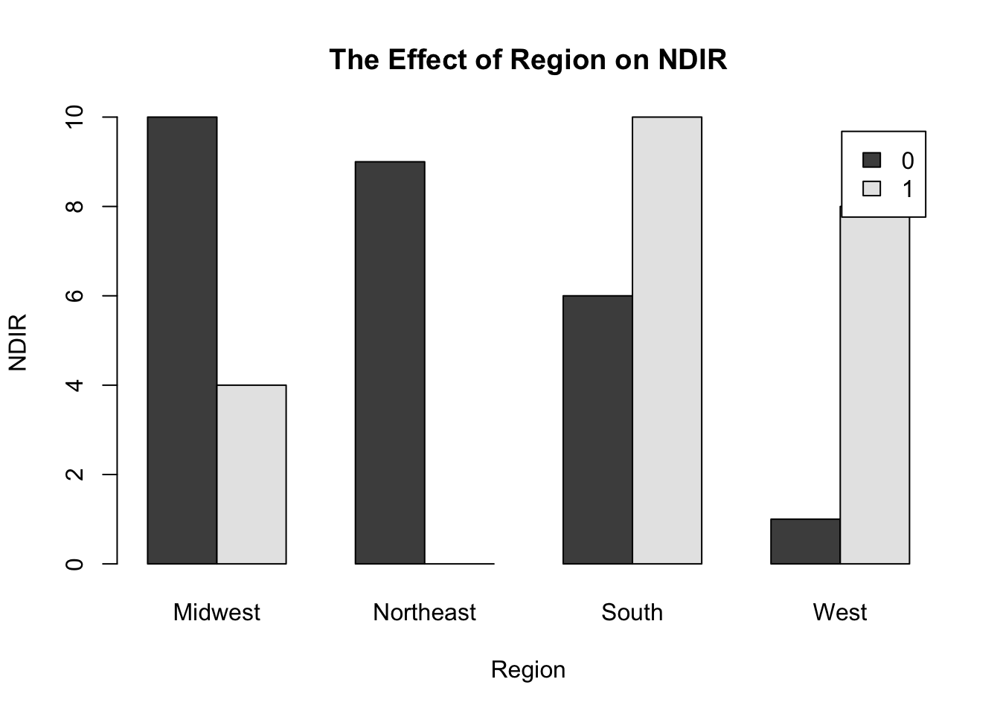

# Setting up the new R environment, starting fresh, click run!
rm(list=ls())
# Setting up the working directory, click run!
setwd("~/Desktop/UTD/PhD CRIM 2022-/F22/EPPS 6356- Data Visualization/Quarto/haleypuddy.github.io")
# Reading the file, click run!
HW4 <- read.delim("HW4data.txt")
head(HW4) State NDIR Unemp Wage Crime Income Metrop Poor Taxes Educ BusFail
1 Alabama 17.47 6.0 10.75 780 27196 67.4 16.4 1553 66.9 0.20
2 Arizona 49.60 6.4 11.17 715 31293 84.7 15.9 2122 78.7 0.51
3 Arkansas 23.62 5.3 9.65 593 25565 44.7 15.3 1590 66.3 0.08
4 California -37.21 8.6 12.44 1078 35331 96.7 17.9 2396 76.2 0.63
5 Colorado 53.17 4.2 12.27 567 37833 81.8 9.0 2092 84.4 0.42
6 Connecticut -38.41 5.6 13.53 456 41097 95.7 10.8 3334 79.2 0.33
Temp Region
1 62.77 South
2 61.09 West
3 59.57 South
4 59.25 West
5 43.43 West
6 48.63 Northeast# Turning on the packages required for HW4, click run!
library("Hmisc")Loading required package: latticeLoading required package: survivalLoading required package: FormulaLoading required package: ggplot2
Attaching package: 'Hmisc'The following objects are masked from 'package:base':
format.pval, unitslibrary("tidyverse")── Attaching packages
───────────────────────────────────────
tidyverse 1.3.2 ──✔ tibble 3.1.8 ✔ dplyr 1.0.10
✔ tidyr 1.2.1 ✔ stringr 1.4.1
✔ readr 2.1.3 ✔ forcats 0.5.2
✔ purrr 0.3.5
── Conflicts ────────────────────────────────────────── tidyverse_conflicts() ──
✖ dplyr::filter() masks stats::filter()
✖ dplyr::lag() masks stats::lag()
✖ dplyr::src() masks Hmisc::src()
✖ dplyr::summarize() masks Hmisc::summarize()# Identifying the mean of HW4 for later usage: mean= 10.88854, click run!
mean(HW4$NDIR)[1] 10.88854# Creating a new dummy variable, i.e. above 1 or below 0 mean, click run!
HW4$NDIR_dummy <- ifelse(HW4$NDIR>=10.88854, 1, 0)
# Creating taxes into an ordinal variable with 4 equally sized bins, click run!
HW4$tax_ord <- cut2(HW4$Taxes, m=12)
# Creating cross tabulation, click run!
table(HW4$NDIR_dummy,HW4$tax_ord)
[1535,1853) [1853,2126) [2126,2371) [2371,3655]
0 5 4 7 10
1 7 8 5 2# Creating bar plot, click run!
barplot(table(HW4$NDIR_dummy,HW4$tax_ord), beside=TRUE, main= "The Effect of Tax Brackets on NDIR", xlab= "Tax Brackets", ylab= "NDIR", legend = TRUE)
barplot(table(HW4$NDIR_dummy,HW4$Region), beside=TRUE, main= "The Effect of Region on NDIR", xlab= "Region", ylab= "NDIR", legend = TRUE)
# Code for a Table with Embedded Charts
# ggplot(df,aes(z,x,fill=as.factor(y)),angle=45,size=16)+ geom_bar(position="dodge",stat="identity") +facet_wrap(~z,nrow=3)
# Creating Table with Embedded Charts, click run!
df <- data.frame(HW4)
p <- ggplot(df,aes(tax_ord,NDIR,fill=as.factor(Region)),angle=45,size=5)+
geom_bar(position="dodge",stat="identity") +facet_wrap(~tax_ord,nrow=3)
p + ggtitle("The Effect of Tax Brackets on NDIR by Region") + xlab("Tax Brackets") + ylab("NDIR") + guides(fill=guide_legend(title="Region")) + theme(axis.text.x = element_text(size = 6))